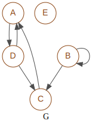

graphpert¶
Created on Apr 26, 2021
@author: salem Aguemoun
-
class
graphm.graphpert.GraphPert(**d)¶ Bases:
graphm.graph.GraphManage Pert graph.
Data is directly stored in
pygraphviz.AgraphDrawing is supported by writing file in ‘dot’ format (others available layouts are
GraphM.layout)- Variables
node_start (str) –
default character for starting node
>
node_end (str) –
default character for ending node
<
color_critical (str) –
default color for drawing critical path of the Pert graph
red / for others colors see https://graphviz.org/doc/info/colors.html
layout (dict) –
default attributes for graph layout, see
pygraphviz.Agraph- prog
(str) type of programmed layout
dot / neato, dot, twopi, circo, fdp, nop
graph_attr (dict) –
default attributes for graph, see
pygraphviz.Agraph- colorscheme
(str) default “” / color scheme to interpret colors
X11, SVG, Brewer. see https://graphviz.org/doc/info/colors.html- directed
(bool) directed graph or not
- label
(str) label printed in the graph
- rankdir
(str) orientation for dot graph
- ranksep
(str) distance between nodes
- strict
(bool) mode for dot graph
node_attr (dict) –
default attributgetattr(self, attr)es for nodes, see
pygraphviz.Agraph- color
(str) font color of nodes
- fontcolor
(str) font color of nodes
- fontname
(str) font name of nodes
- shape
(str) shape of nodes
edge_attr (dict) –
default attributes for edges, see
pygraphviz.Agraph- color
(str) font color of edges
- fontcolor
(str) font color of edges
- fontname
(str) font name of edges
Note
For inherited class variables see
graphm.graph.GraphCaution
Instance variables
- Variables
matrix (list) –
matrix of graph.
Generated from initialization to simplify the build of Pert’s graph
viz (pygraphviz.AGraph) – manage drawing in dot format with
pygraphviz.AGraphlayout (dict) – graph layout, see
GraphPert.layout
Graph for the majority of examples
-
node_start= '>'¶
-
node_end= '<'¶
-
sep= ','¶
-
color_critical= 'red'¶
-
layout= {'prog': 'dot'}¶
-
graph_attr= {'directed': True, 'fontname': 'Arial', 'fontsize': 14, 'label': 'Pert', 'margin': 0.02, 'rankdir': 'LR', 'ranksep': 1, 'strict': False}¶
-
node_attr= {'color': 'black', 'fixedsize': True, 'fontcolor': 'black', 'fontname': 'Arial', 'fontsize': 11, 'margin': 0.01, 'shape': 'circle', 'width': 0.7}¶
-
edge_attr= {'color': 'gray30', 'fontcolor': 'gray25', 'fontname': 'Arial', 'fontsize': 10}¶
-
static
_dict_add(d: dict, index: int, item: iter) → None¶ add in place item in given dictionary
-
add_critical() → None¶ Add critical path to viz from:
-
add_edge_viz(sb: pygraphviz.AGraph, edge, **d) → None¶ add edge in pygraphviz.AGraph passed in argument
-
add_edges() → None¶ Add edges to viz from:
-
add_edges_critical(sbu: pygraphviz.AGraph, sbc: pygraphviz.AGraph) → None¶ Add critical edges to viz
-
add_node_value_down(node_from: str, node: int) → None¶ Important
node here is node index
-
add_node_value_back(node_scs: str, node: int) → None¶ Important
node here is node index
-
add_node_viz(sb: pygraphviz.AGraph, node, **d) → None¶ add node in pygraphviz.AGraph passed in argument
-
add_nodes() → None¶ Add nodes to viz from:
-
add_nodes_critical(sbu: pygraphviz.AGraph, sbc: pygraphviz.AGraph) → None¶ Add critical nodes to viz
-
add_timeline(**d) → None¶ Add nodes to viz from:
-
matrix_add_fictionals(node_ref: str, nodes_fictional: set, node_old: str) → None¶
-
matrix_merge_nodes(node_ref: str, nodes_merged: list, node_end: str) → None¶
-
matrix_reduce_nodes(nodes_merged: set, new_end: str) → None¶ new_end do to reduce matrix from node_end
-
get_ancestors(fictional: bool = False) → dict¶ get ancestors from self matrix
dict of set
-
get_ancestors_label(fictional: bool = False) → dict¶ get ancestors from self matrix
dict of set
-
get_successors(fictional: bool = False) → dict¶ get successors from self matrix dict of set
-
get_successors_label(fictional: bool = False) → dict¶ get successors from self matrix dict of set
-
group_nodes(nodes: list, ancestors: dict) → tuple¶ Important
To well understand
Nodes in argument are ancestors of treated node
-
set_back()¶ Define value of nodes by a DFS
Important
node here is the numeric value in matrix
do not forget node with end for end !
-
set_critical()¶ get the best critical path ;o)
-
set_down()¶ Define value of nodes by a DFS
Important
node here is the numeric value in matrix
-
set_from_pert(pert: dict, **d) → None¶ Set the graph from pert, values and optionally edge names
- Parameters
pert (dict) –
pert definition containing for each task. her ancestors, value
- index
(str) edge
- value
tuple with edge ancestors, values of edge Contains tuple (: iter, value: int, label: str)
ancestors (iter) in formats str or [str,…] or (str, …)
value (int)
**d (dict) –
containing options:
- node_start
(str) character for starting node
default:
GraphPert.node_start- node_end
(str) character for ending node
default:
GraphPert.node_end- color_critical
(iter) color for drawing critical path of the Pert graph
default:
GraphPert.color_critical
-
matrix_reduce()¶
-
set_matrix(pert)¶
-
set_nodes_index(style: str = 'from_ancestor') → None¶ Sets index for all nodes
-
set_ranks()¶ set ranks for nodes
-
__module__= 'graphm.graphpert'¶